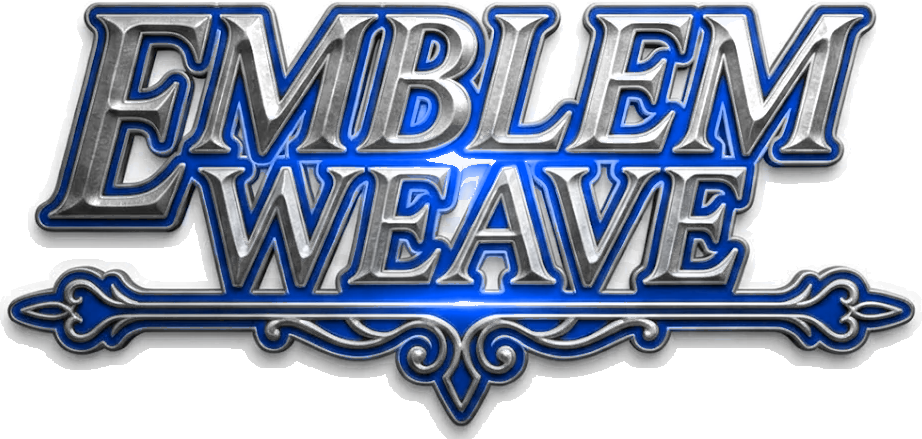
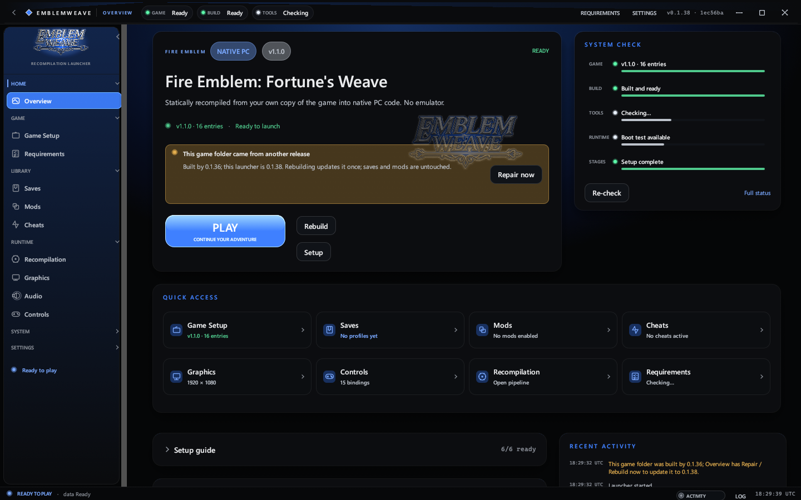
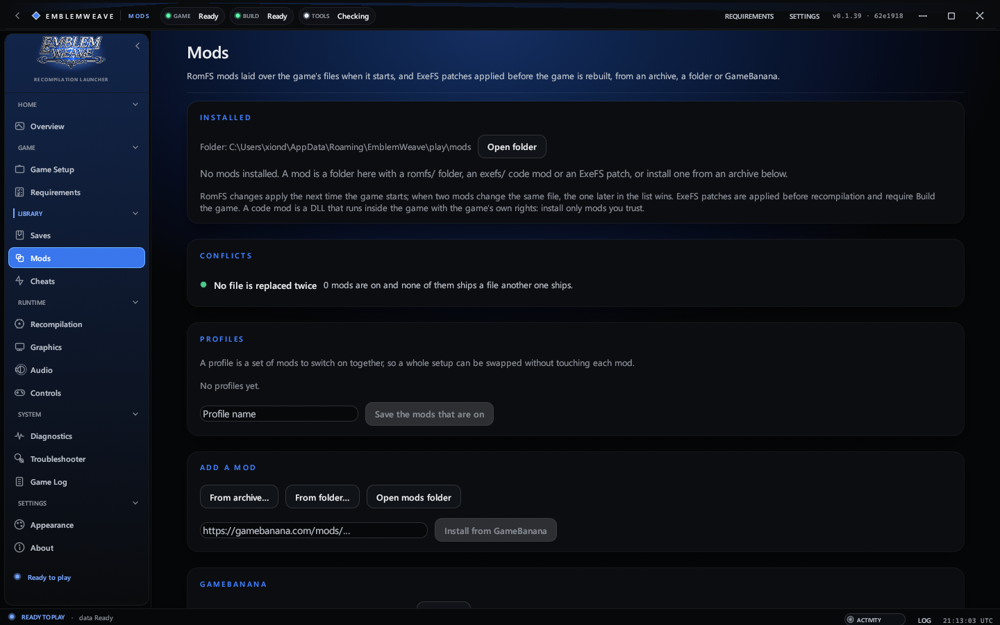
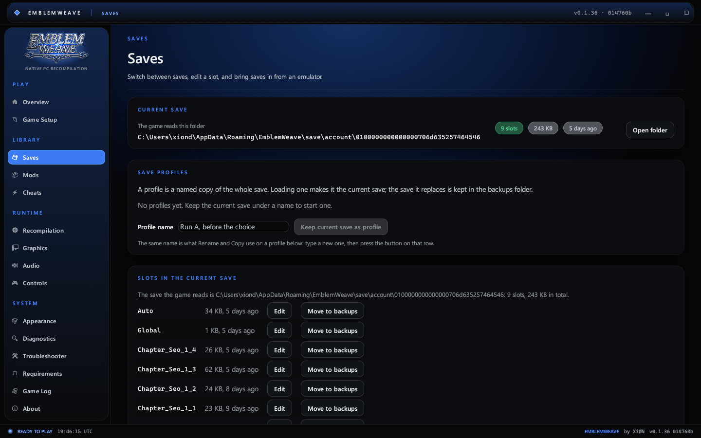
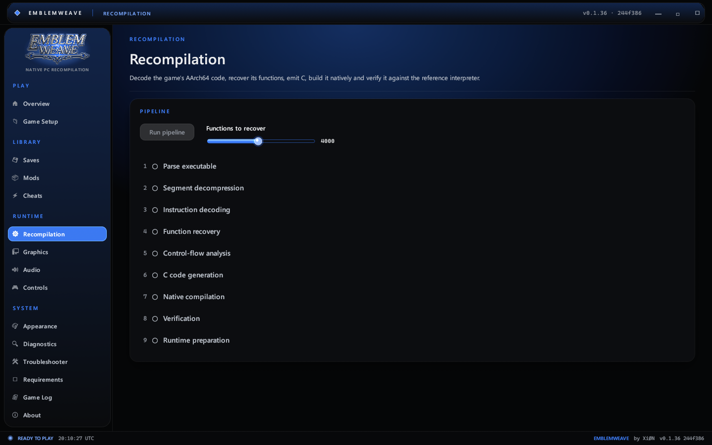
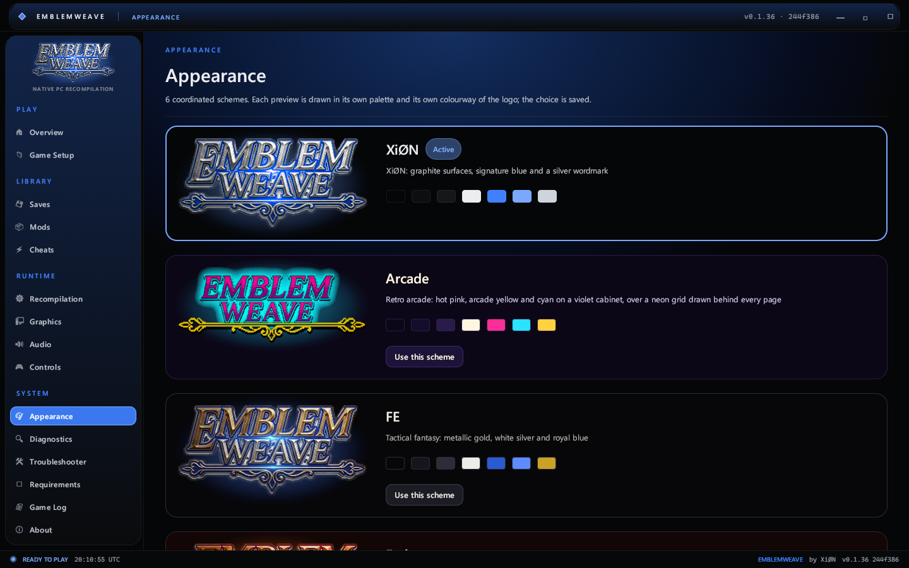
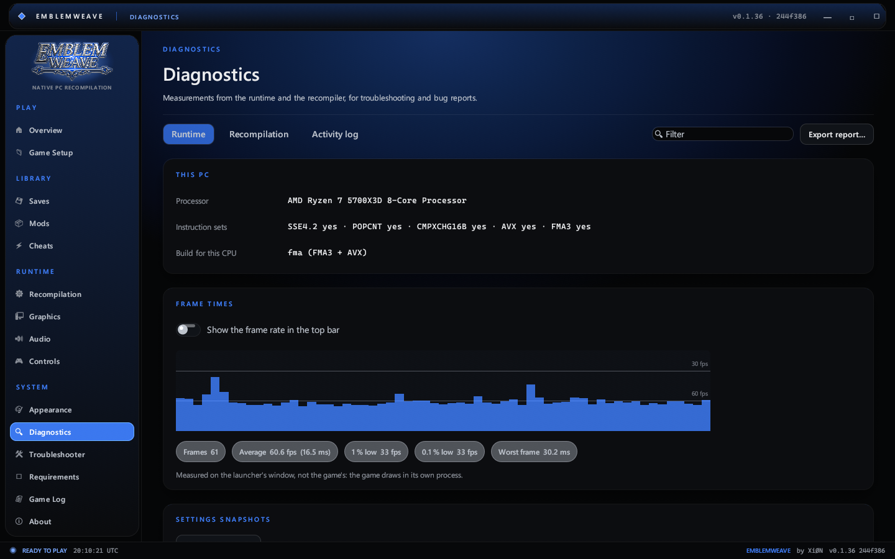

Build once, then play
Validates your dump, unpacks the console's compressed main, lifts six modules and links fefw.exe. Later builds only redo what changed.

FIRE EMBLEM: FORTUNE'S WEAVE · WINDOWS · NATIVE
EmblemWeave builds the game ahead of time from your own dump and plays it natively, with no emulator. Mods, save profiles, cheats, an in-game menu and a recompilation pipeline you can watch run.
Validates your dump, unpacks the console's compressed main, lifts six modules and links fefw.exe. Later builds only redo what changed.
RomFS mods with on/off switches, profiles and conflict listing. Code mods load as DLLs with the hook sites they bring, through the engine's versioned interface.
Save profiles, a slot editor, imports from yuzu, suyu, sudachi, citron, eden and torzu. Atmosphere codes and Cheat Engine tables, live.
TAAU, FSR 1, NVIDIA Image Scaling, FSR 3.1, DLSS / DLAA and XeSS, each with a real availability check. HDR output and frame pacing in the engine.
F10 pauses the game, takes a screenshot, restarts or stops it, and reaches quick cheats, display settings and controls.
Every stage reports, engine logs are read back, crashes are decoded, and the CPU, GPU and toolchain are recorded for bug reports.
fefw-recomp is the permanent primary engine, integrated at engine/fefw-recomp and built from source here. Its lifter decodes AArch64, emits C++, and its runtime serves the console SDK's services, NVN on Vulkan and XAudio2 audio. EmblemWeave is the application around it: validation, toolchain, build orchestration, configuration, diagnostics.
The lifted code is built for the processor it will run on. fma uses FMA3 and AVX where the CPU has them; compat needs only SSE4.2, POPCNT and CMPXCHG16B, which brings Sandy Bridge, Ivy Bridge and Xeon E5 v1/v2 in. The launcher probes the CPU, picks the target and records it in Diagnostics; anything older is refused with the missing instruction set named.
The launcher needs Visual Studio 2022 C++ tools, the Windows SDK, LLVM, CMake, Ninja and Python. The release zip carries the shader translator, so no .NET SDK is needed.
.nsp, .nx or a packed .nupnxrt/mod_api.h, version 3





The repository, its source mirror and a static copy of this page. Each is checked when the page loads.
Releases, saves and your own files stay where you put them.
EmblemWeave contains no game code, no game assets, no firmware and no keys, and downloads none of them. You need your own legally obtained copy of the game. It is not affiliated with, endorsed by or supported by Nintendo or Intelligent Systems; the names identify the software it works with. The engine is GPL-3.0 and keeps its own licence and notices; the launcher is GPL-3.0 too.